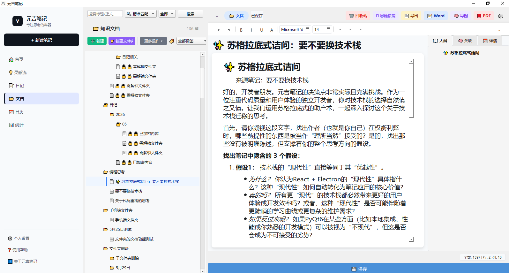
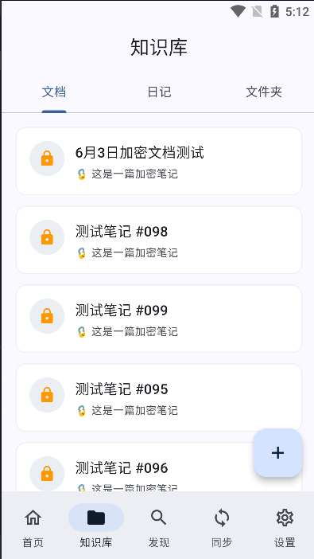

一个工具覆盖你的全部笔记需求
PBKDF2 + AES-256 + HMAC 多层加密。笔记内容只有你能看到，云端存储的始终是密文。
使用坚果云等 WebDAV 服务自由同步。数据存在你自己的云盘，不依赖任何第三方服务器。
7 种 AI 分析视角：逻辑透视、价值定标、影之推演、涟漪效应……帮你深度理解笔记内容。
碎片灵感随手记录、日记按日期回溯、知识文档结构化整理。三种笔记类型各司其职。
双向链接 + 反向链接 + AI 语义推荐。笔记不再是孤岛，自动构建你的第二大脑。
支持百度语音识别，说话就能记笔记。灵感来了直接说出来，无需打字。
没有订阅，没有隐形收费。一次付费，桌面端 + 手机端全部功能无限制使用。
每一个设计决策，都为你的隐私和体验负责
笔记从写入磁盘的那一刻就是密文。PBKDF2 + AES 多层加密，云端同步的始终是加密数据。即使同步服务被攻击，你的笔记依然安全。
笔记存储在本地 SQLite 数据库中，通过 WebDAV 同步到你自己的云盘（坚果云、Nextcloud 等）。不依赖任何第三方服务器，你的数据你说了算。
不需要联网就能写笔记、查笔记。网络只是用来同步的桥梁，没有网络，你的笔记工具依然完整可用。
¥58 买断桌面端 + 手机端全部功能。没有订阅制，没有按功能收费，免费获得所有后续更新。
一个人开发，一个人维护。你反馈的每一个问题和建议，都能直接到达开发者手中。没有客服机器人，没有漫长的工单排队。
集成百度语音识别，支持手机端语音输入。灵感来了直接说出来，自动转为文字保存。
强大的富文本编辑器，支持 Markdown、图片插入、AI 写作辅助。 加密管理、数据统计、知识网络，一切都在桌面端完成。


随时随地阅读和编辑你的笔记。支持加密笔记解密查看、Markdown 实时预览、日记日历回溯。 与桌面端通过 WebDAV 无缝同步。
桌面端创作 → 同步到云端 → 手机端随身查看
一次付费，永久使用
桌面端 + 手机端，全部功能无限制
购买后即刻获得激活码，支持桌面端和手机端激活
开始构建你的第二大脑
📌 桌面端为单文件 EXE，下载后直接运行，无需安装。
📌 手机端为 APK 文件，下载后安装即可使用。
📌 首次使用建议先在桌面端创建数据，再通过 WebDAV 同步到手机端。